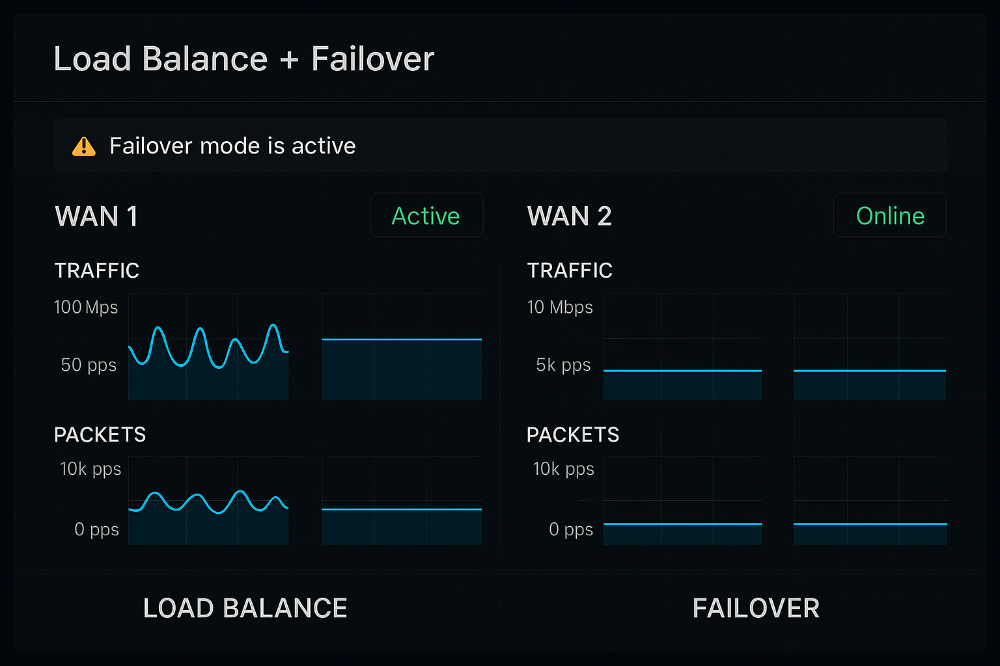
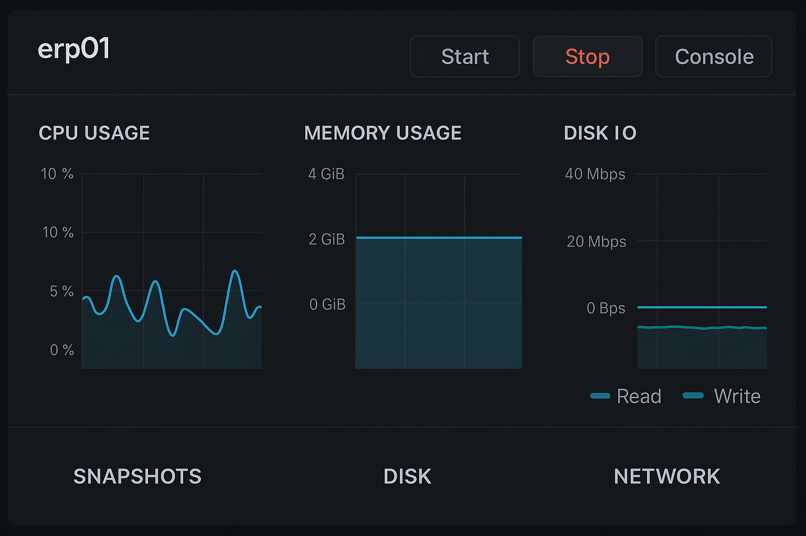
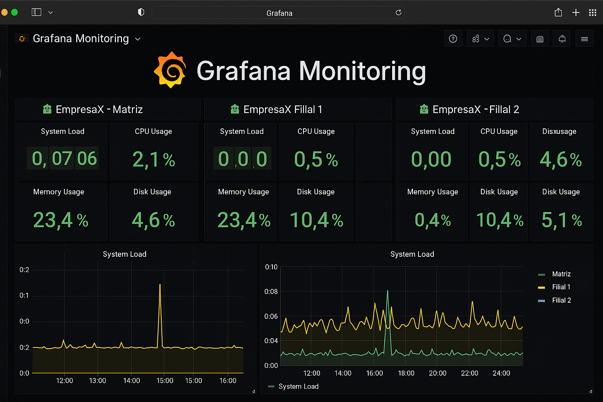
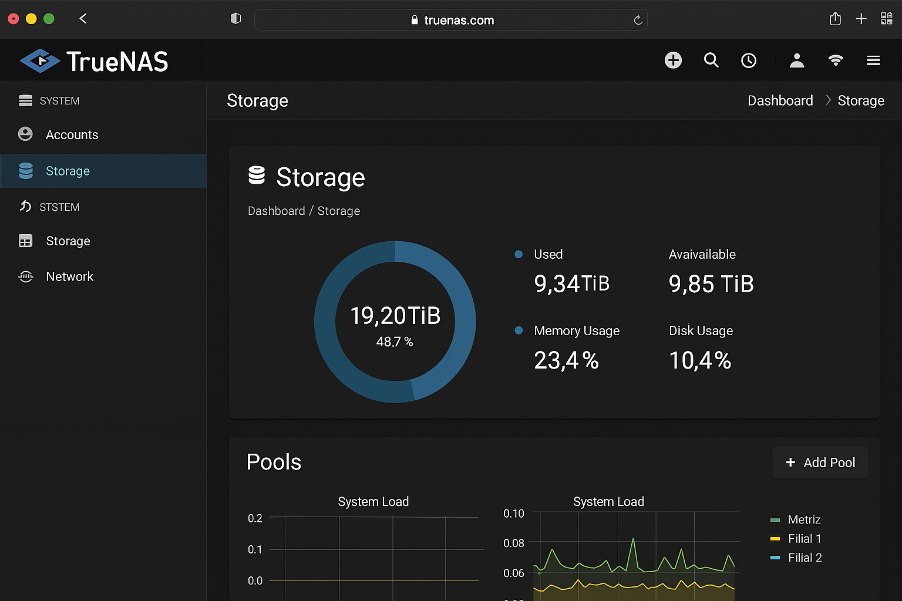
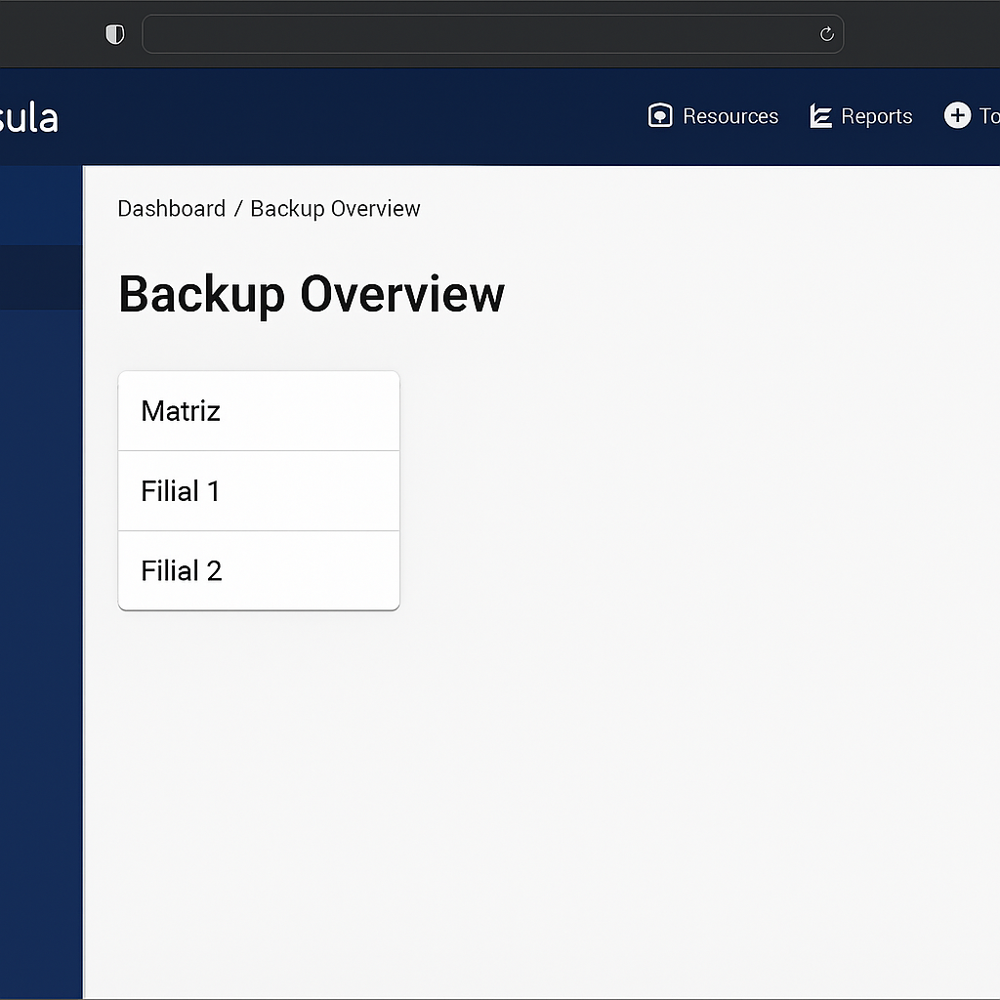

🏢 Visão Geral
EmpresaX possui uma matriz e duas filiais, cada uma com servidores físicos e virtualizados. A estrutura foi projetada para alta disponibilidade, segurança e replicação de dados entre unidades e para um servidor externo localizado na residência do administrador.
🖥️ Infraestrutura da Matriz
- Servidor Dell R720 com Proxmox e 448 GB RAM
- VMs: TrueNAS, Pi-hole, Windows Server 2016, Bacula Agent, Proxmox Backup Server, Apache Web Server
- Servidor secundário para failover e balanceamento
- Servidor NAS Dell R660xs com 256 TB SSD
- Firewall baremetal com pfSense
🏬 Infraestrutura das Filiais
- Servidor Dell R720 com Proxmox e 448 GB RAM
- VMs: pfSense, TrueNAS, Pi-hole, Windows Server 2016, Bacula Agent, Proxmox Backup Server
- Servidor secundário Dell R660xs com 256 TB SSD
🏠 Servidor Externo
Servidor Lenovo TD350 com 2x Xeon E5-2699 v4, 256 GB RAM e 120 TB SSD, utilizado como destino de backup remoto para segurança adicional.
🖼️ Imagens do Projeto




